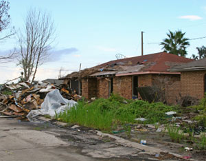

Recent reports are tallying the anticipated human cost of global warming, including the displacement of 150 million people throughout the world by 2050.
A new report from the Environmental Justice Foundation (EJF) finds that climate change is already attributable for the deaths of more than 300,000 people per year, while seriously affecting another 325 million people each year. Most people on the planet are vulnerable to the effects of climate change, and about 10 percent of the population is at extreme risk, according to the report. The report also finds that by 2050, as many as 150 million people could be forced from their homes due to climate change impacts.
The report calls for a new legal framework for such “climate refugees,” who are not recognized under the 1951 Geneva Convention on Refugees.
While the EJF report highlights severe impacts on mostly developing countries - including Bangladesh, island nations and most of the African continent - a new report from Oxfam America finds significant vulnerabilities right here in the United States, particularly in the Southeast.
The report looks at places where climate-change hazards overlap with social vulnerabilities, including poverty, old age, and areas with high percentages of populations with special needs. It found about 60 counties with both high social vulnerabilities and exposure to multiple hazards due to climate change. Most of those counties are located in the states of Alabama, Florida, Louisiana, South Carolina and Texas.
|
 ISTOCKPHOTO/DOUG WEBB A house in St. Bernard Parish, La., one year after Hurricane Katrina. The destructive potential of Atlantic hurricanes has |
|
|